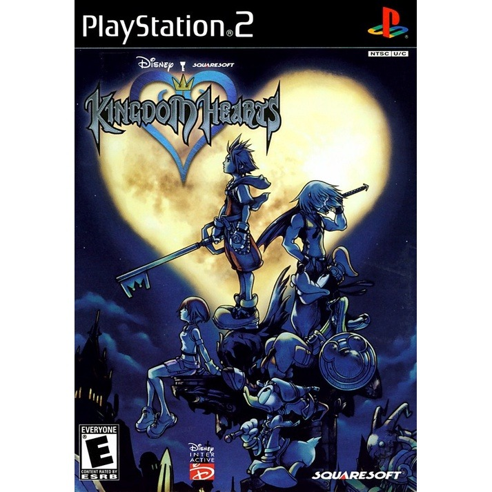

Sinopse
Kingdom Hearts é um jogo de ação e RPG que mistura personagens da Disney e da série Final Fantasy, com uma história original criada pela Square Enix. O jogo segue Sora, um jovem garoto que, após uma tempestade misteriosa, é transportado para vários mundos baseados nos filmes da Disney.
Enquanto viaja com seus novos amigos, Donald e Pateta, Sora deve combater as forças das trevas que estão ameaçando os mundos, buscando também encontrar seus amigos desaparecidos. Com uma história envolvente, combate em tempo real e um universo mágico, Kingdom Hearts tornou-se um dos jogos mais queridos da plataforma.
Características Principais
- Combate em tempo real com batalhas dinâmicas
- Exploração de mundos inspirados em filmes da Disney
- Personagens de Final Fantasy e Disney
- História profunda e emocionante
- Sistema de evolução de personagens e habilidades
- Trilha sonora composta por Yoko Shimomura
Imagens Adicionais